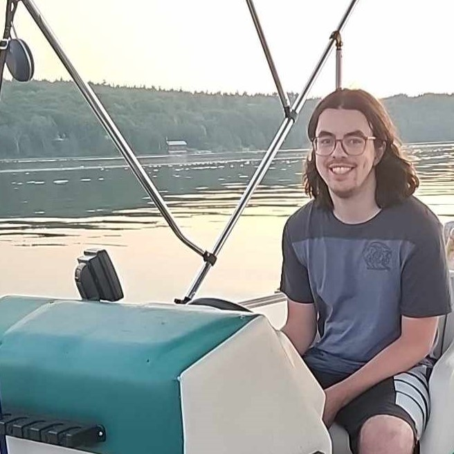

Jared Scott
A programmer looking to help craft nostalgic joy through code.

ON, Canada


A programmer looking to help craft nostalgic joy through code.
ON, Canada
Brock University Capstone Project
B.A.T.S. (2022-2023)
Forage Friendzy is a game created from scratch by our team called B.A.T.S. and was our capstone project with Brock University for our final year of schooling. We got to showcase Forage Friendzy at Level Up and GD Launch!
The experience I gained from this project includes, but is not limited to:
My main personal goal within this project was to add something new to my skillset as a game programmer. The challenge of working on my first networked game accomplished this goal as that was a skillset I did not possess prior to this project. I was also able to expand and improve upon my skills and experiences I gained from my previous years project Puzzlegeist. This was the most demanding (in a good way) project I have been a part of and I am proud of what the team and I were able to accomplish. Use the following links to take a further look at the game or even play it if you have the time!

Niagara College Capstone Project
Sigma Studios (2021-2022)
Puzzlegeist is another game that was created from scratch by our team Sigma Studios as our 3rd year capstone project with Niagara College. Puzzlegeist was showcased virtually at GD Showcase 2022.
The experience I gained from this project includes, but is not limited to:
Puzzlegeist was my first experience being a part of a game studio structured team. A lot of my time spent working on this project was new and exciting experiences that had a great impact on my development as a game programmer. Finally gaining experience working on a team with other programmers was crucial in my development of writing concise and logical code. Puzzlegeist gave me my first glimpse of how fun game development is when you are a part of a team that has a passion and vision for what they are creating. We did not do as much marketing for Puzzlegeist as my team for Forage Friendzy did but I have set up a google drive if you would like to try out the game!

Niagara College Rapid Game Dev Project
Dead Pixel (2021)
The Wild Return is a game that was created for a one semester Rapid Game Development Course I took at Niagara College in my 2nd year. 4 other students and I named our team Dead Pixel and we were tasked to create a small game from a given starting point. We were provided with a Unity project that contained bare bones 3D side scroller functionality. From this we were expected to create our own environment and art assets along with mechanics that made sense for our game. I believe our team went above and beyond with our western shooter take on this side scroller task.
With only 2 programmers on the team I did a lot of mechanic implementation and UI programming, as well as debugging and QA. While all credit goes to my programming partner for his fantastic job making a super fun boss battle at the end of the game. The game is challenging but if you want to take on Mad Dog McCoy yourself feel free to try it out with the link below.
Currently working on a way to concisely add displays of smaller projects
I completed the programming stream of the GAME program offered concurrently at Brock University and Niagara College.
The following are the diplomas, honour and awards I earned from my time in the program.
BSc (Honours) in Game Programming
St.Catharines, ON, Canada
Sep. 2019 - Jun. 2023
I graduated Brock University with first-class standing.
I received the Deans Honour List Award each of the 4 years of my program at Brock.
My accumulated average of all 25 courses I took at Brock: 86%.
Advanced Diploma in Game Development
Welland, ON, Canada
Sep. 2019 - Jun. 2023
I was presented with an Award of Excellence for my performance during the 2022/23 academic year.
I received the Deans Honour List Award 3 of my 4 years with Niagara College.
My accumulated average of all 14 courses I took at Niagara: 91%.